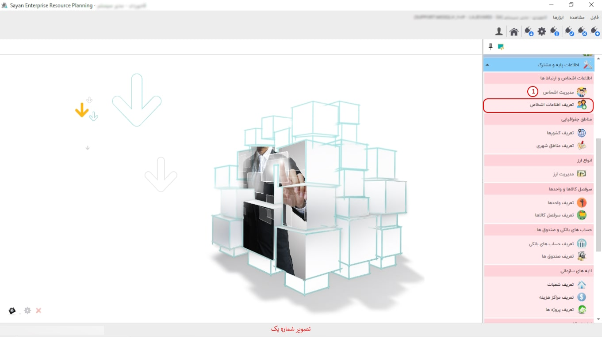

در این بخش، کاربران قادر خواهند بود برچسبها را مشاهده کرده و افراد را بهطور کلی یا بر اساس هر برچسب خاص، بسته به سطح دسترسی خود، بررسی کنند.
برای ادامه مطلب به تصویر شماره دو مراجعه نمایید.

-همه برچسبها (کادر شماره یک): این بخش به شما این امکان را میدهد که تمامی اشخاص حقیقی و حقوقی را که تعریف کردهاید، مشاهده کنید. با استفاده از انتخاب نوع برچسبها، میتوانید آنها را فیلتر کرده و فقط موارد مورد نظر خود را مشاهده نمایید.
-کادر شماره دو: در این بخش، میتوانید تمامی افراد حقیقی و حقوقی را که تعریف کردهاید، مشاهده کنید.
برای ادامه مطلب به تصویر شماره سه مراجعه نمایید.

-کادر شماره یک: این بخش به شما این امکان را میدهد که برچسبهای مربوط به افراد مورد نظر خود را انتخاب و تأیید کنید.
برای ادامه مطلب به تصویر شماره چهار مراجعه نمایید.

-کادر شماره یک: ابتدا برچسب مورد نظر خود را انتخاب کنید. سپس با کلیک بر روی آیکون «+»، میتوانید افراد مورد نظر خود را تعریف کنید.
برای ادامه مطلب به تصویر شماره پنج مراجعه نمایید.
-کادر شماره یک: در این بخش، اگر فرد مورد نظر شما حقیقی است، بر روی گزینه حقیقی کلیک کنید.
-کد جزء (کادر شماره دو): در این بخش، کد جزء بهصورت پیشفرض برای شما ایجاد میشود. به همین دلیل، نیازی به تغییر در کد جزء نیست.
-نام (کادر شماره سه): در این قسمت، میبایست نام شخص حقیقی خود را وارد نمایید.
نکته: برای تعریف پرسنل و کارکنان و تهیه گزارش مالیات و بیمه، اطلاعات زیر ضروری است: نام و نام خانوادگی، جنسیت، نام پدر، تاریخ تولد، تابعیت، کد ملی، شماره شناسنامه، اطلاعات کامل حساب بانکی، آدرس محل سکونت و کد پستی. این اطلاعات به منظور استفاده در تهیه لیست بیمه و مالیات الزامی است.
برای ادامه مطلب به تصویر شماره شش مراجعه نمایید.
-کادر شماره یک: در این بخش، اگر فرد مورد نظر شما حقوقی است، بر روی گزینه حقوقی کلیک کنید.
-کد جزء: در این بخش، کد جزء بهصورت پیشفرض برای شما ایجاد میشود. به همین دلیل، نیازی به تغییر در کد جزء نیست.
-نام سازمان: در این قسمت، میبایست نام سازمان مدنظر خود را وارد نمایید.